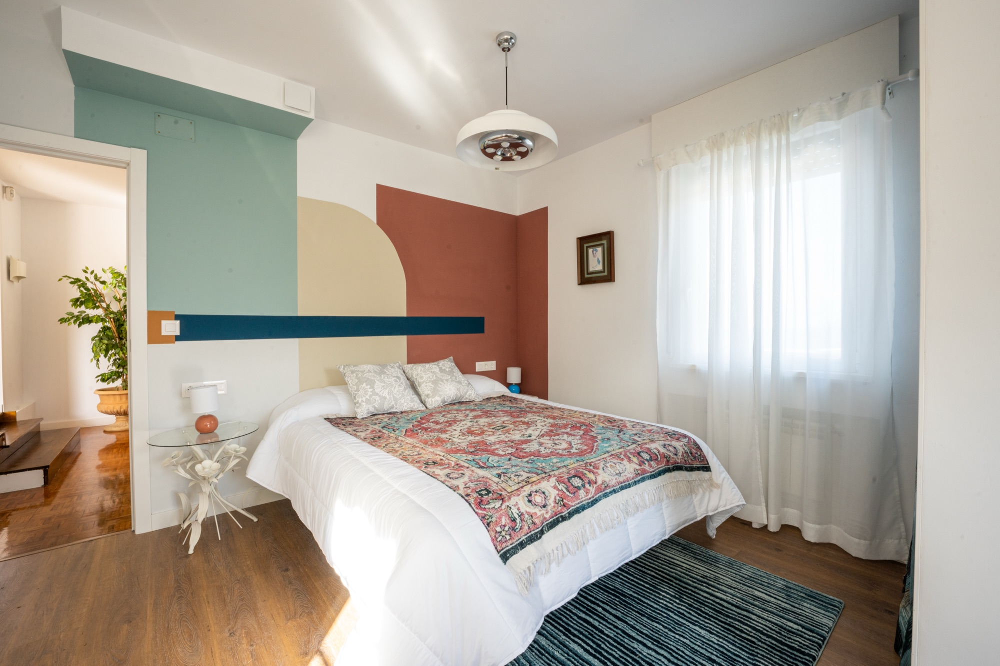
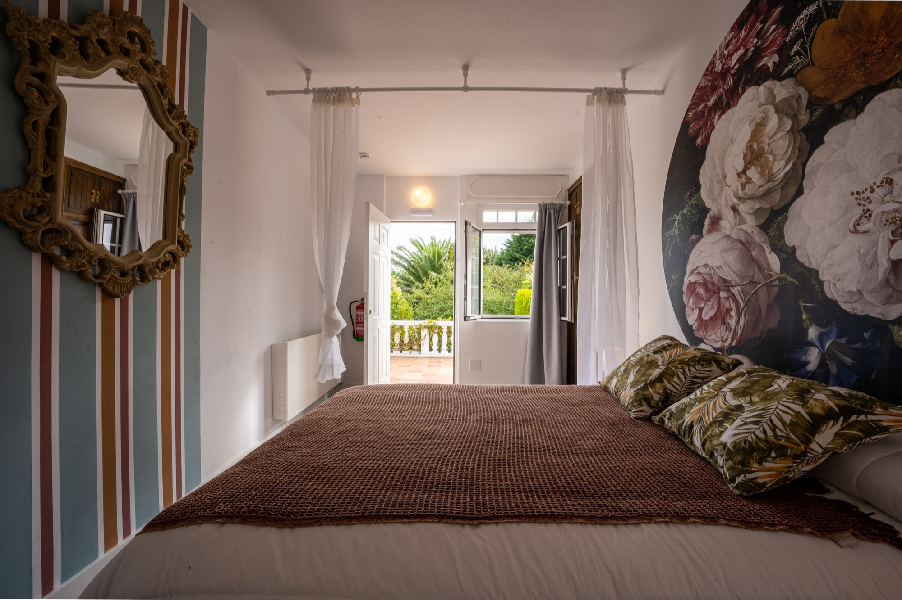

Habitación 01
Mar Llana
Mar liso como un espejo, sin oleaje. Una estancia serena y luminosa donde el tiempo parece detenerse desde primera hora de la mañana.
Siete habitaciones únicas en nuestro hotel boutique y una furgoneta camper equipada para recorrer la costa atlántica gallega a tu propio ritmo.
En Finca dos Mares cada estancia toma su nombre de un estado del Atlántico, inspirándose en las mareas y en el paisaje que rodea la finca en Covas. Un guiño al territorio pensado para desconectar con privacidad, silencio y confort.
Algunas se asoman al horizonte del océano y otras se recogen sobre la serenidad de la finca, pero todas comparten calidez, luz natural y una personalidad irrepetible.


Mar liso como un espejo, sin oleaje. Una estancia serena y luminosa donde el tiempo parece detenerse desde primera hora de la mañana.
Olas largas con copetes de espuma blanca que al romper dejan un murmullo suave. Equilibrio entre calidez, amplitud y calma atlántica.
Inspirada en el pulso constante del mar del norte. Un refugio acogedor de madera y tejidos suaves al que volver tras caminar por la costa.
Olas altas y el sonido profundo del océano. Pensada para quienes buscan desconexión total, lectura sin prisa y descanso reparador.
Carácter propio y detalles singulares que dialogan con la naturaleza de Cabo Prior, en un ambiente íntimo y silencioso.
Donde la espuma dibuja líneas sobre el agua al compás del viento. Luminosa, envolvente y cuidada hasta el último detalle.
Recogida sobre la tranquilidad de la finca, combina tonos cálidos, luz natural y una atmósfera pensada para despertar sin reloj.
Todo lo necesario para una escapada corta o una estancia larga en la costa de Galicia, con la tranquilidad de una propiedad íntima.

¿Buscas la libertad de explorar la costa sin ataduras? Nuestro servicio de alquiler de furgoneta camper te ofrece una forma única de viajar con comodidad, flexibilidad y autonomía total por playas, faros y acantilados.
Consultar por WhatsApp · +34 610 86 61 50Elige tus propios destinos y cambia de plan cuando quieras. Desde las playas de Ferrol y Valdoviño hasta las rutas costeras más auténticas.
Totalmente equipada para garantizar una experiencia cómoda, con espacio para dormir, cocinar y disfrutar de cada parada frente al mar.
Tanto para un fin de semana en pareja como para varios días recorriendo las rías, la camper se adapta a tu propio mapa.
Un rincón creado para la calma, el descanso y la buena mesa junto al Atlántico.
Prioiro Núcleo, DP-3603
15594 Covas, Ferrol (A Coruña)
Restaurante: del desayuno a la cena
Lunes: Cerrado por descanso